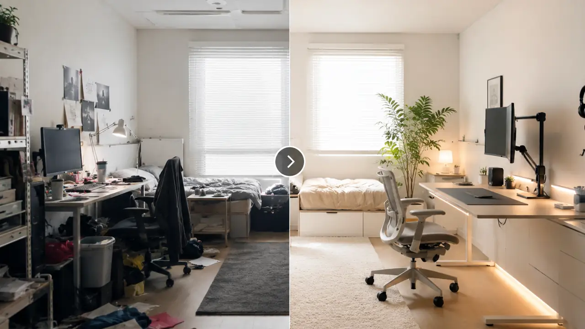
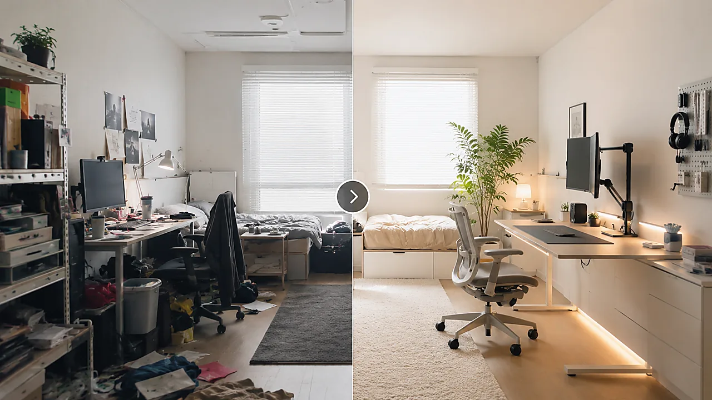

Category Overview
Category OverviewAI 대본 루틴 → 후킹 문장 → 프롬프트 저장 → 블로그 초안 → 사이트 유입
AI를 많이 쓰는 것보다 반복 작업을 줄이는 구조를 먼저 만듭니다. 쇼츠 대본, 후킹 문장, 프롬프트 저장, 블로그 초안, 사이트 유입 흐름을 5개 글로 정리했습니다.
카테고리 보기 →상세 설명은 카테고리 안으로 옮기고, 홈에서는 선택지만 남겼습니다.
Category OverviewAI를 많이 쓰는 것보다 반복 작업을 줄이는 구조를 먼저 만듭니다. 쇼츠 대본, 후킹 문장, 프롬프트 저장, 블로그 초안, 사이트 유입 흐름을 5개 글로 정리했습니다.
카테고리 보기 → Category Overview
Category Overview집중력은 의지보다 환경·알림·수면·대체 행동의 문제입니다. 퇴근 후 집중, 알림 줄이기, 수면 전 루틴, 타이머 활용, 스마트폰 대체 행동을 정리했습니다.
카테고리 보기 →
Category Overview작은 책상과 원룸은 물건을 더 사기보다 덜 보이게 만드는 것이 먼저입니다. 정리, 구역화, 케이블, 모니터암, 수납박스 우선순위를 정리했습니다.
카테고리 보기 → Category Overview
Category Overview인기 상품보다 문제 해결 우선순위가 먼저입니다. 부업 장비, AI 영상 장비, 자취방 개선, 상품 조합 기준, 촬영 소품 우선순위를 정리했습니다.
카테고리 보기 →어디부터 볼지 모르겠다면 아래 글부터 시작하세요.
 TrendFlow Guide
TrendFlow Guide트렌드 키워드 1개를 문제형·비교형·체크리스트형 쇼츠 대본 3개로 확장하는 루틴입니다.
읽기 → TrendFlow Guide
TrendFlow Guide퇴근 후 바로 눕지 않고 30분만 작업에 들어가기 위한 환경 설정 루틴입니다.
읽기 →
TrendFlow Guide하루 한 가지씩 책상 위 물건과 시각적 자극을 줄이는 현실적인 정리 흐름입니다.
읽기 → TrendFlow Guide
TrendFlow Guide퇴근 후 1시간 부업을 시작할 때 무엇부터 준비하면 좋은지 우선순위로 정리합니다.
읽기 →